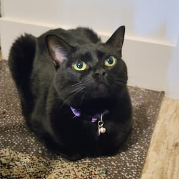
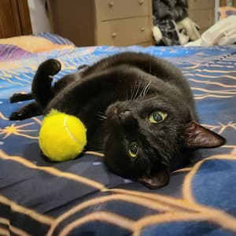
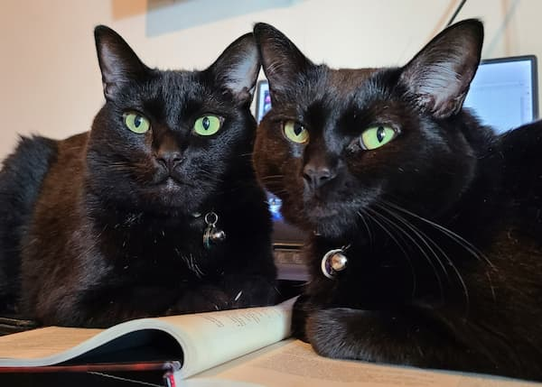

About me

I'm a computer science student at MiraCosta College who loves to build software from the ground up. I'm currently working on building a relational database in C++, which is my favorite language to work in. I also have an interest in Rust and have implemented some Rust-like features into this project, although I haven't started any Rust projects yet.
I have also been designing a programming language called Meowy, which will be a high-level interpreted language with a lot of functional programming features. I've been slowly working on developing the specifications for it in my free time and look forward to learning more about programming languages and interpreters when I begin coding it.
My passion is for systems programming, but I also feel comfortable working with front-end UI systems as well. I am currently taking a web design class to learn more about UI/UX design and implementation.
My cats


These are my cats Misty and Shadow. They are your typical domestic shorthair cats whom I adopted from the San Diego Humane Society in 2016. They are incredibly affectionate and cuddly; Shadow is by far the neediest and most jealous cat I've ever met! They make sure I take breaks, which I sometimes forget to do when I get locked in on a project.
